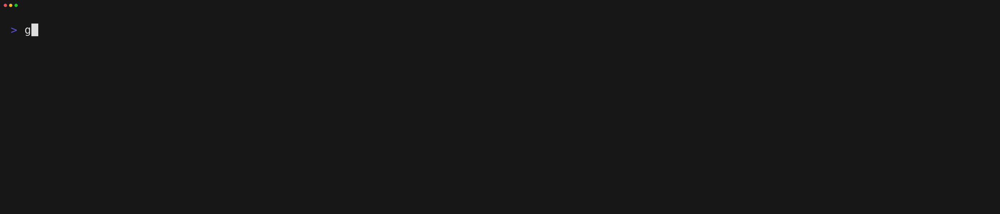

üêê Goat
goat (Go API Tester), a CLI tool to simplify and automate integration testing of HTTP APIs by using script files.

Example Goatfile
use util/login ### Setup LOGIN {{.instance}}/api/v1/auth [Header] Content-Type: application/json [Body] { "username": "{{.username}}", "password": "{{.password}}" } [Script] assert(response.StatusCode == 200, `Status code was ${response.StatusCode}`); --- ### Tests GET {{.instance}}/api/v1/list [Script] assert(response.StatusCode == 200, `Status code was ${response.StatusCode}`); print(response.Body);
üìñ Hey and welcome to the Goat documentation!
Here you will learn how to use the Goat CLI tool and how to write Goatfiles.
For better understanding and conciseness, we highly suggest to take a look at the Glossary before continuing into the documentation.
Glossary
To make this documentation more concise and understandable, here you can find a list of all special terms and their definitions used across the documentation.
Goatfile- A file with the extension.goatwhich is interpreted and executed by the Goat CLI.action- Can be any executable entity defined in a Goatfile like a request, log entry or execution.batch- Defines the execution of multiple requests and actions across one or multiple Goatfiles.
Getting Started
Installation
Pre-Built Binaries
First of all, you need to install the goat CLI tool. It is distributed as a single binary without any dependencies. So simply download the latest release binaries from GitHub fitting your system configuration.
You can also use the provided installation script, if you want an easy one-line setup.
$ curl -Ls https://raw.githubusercontent.com/studio-b12/goat/main/scripts/download.sh | bash -
Installation with go install
Alternatively, if you have the Go toolchain installed on your system, you can also simply use go install to build and install the tool for your system. This is also very useful if no pre-built binary is available for your specific system configuration.
Details on how to install the Go toolchain are available here.
Simply use the following command to install the program.
go install github.com/studio-b12/goat/cmd/goat@latest
This will install the latest tagged version. You can also specify a specific version or branch after the @.
go install github.com/studio-b12/goat/cmd/goat@dev
First Goatfile
After that, simply use the following command to initalize a new Goatfile.
goat --new
This will generate a new Goatfile with the name tests.goat in your current working directory with some simple examples and documentation. You can use this file as your starting point to play around with Goat or to create your project's integration test structure.
Command Line Tool
The goat command is used to create, validate and execute Goatfiles.
You can pass one or multiple Goatfiles or directories as positional arguments. For example:
goat issue_32.goat tests/integrationtests
When passing in a directory, Goat will look for any *.goat files recursively. Files and directories prefixed with an underscore (_) are ignored. This is especially useful for Goatfiles which are only supposed to be imported or executed in other Goatfiles. If you want to read more about this, take a look into the Project Structure section.
Flags
In the following, further information is provided about the various flags which can be passed to the goat CLI.
-
-a ARGS,--args ARGS
Pass params into the execution as key-value pairs. If you want to pass multiple args, specify each pair with its own parameter.
Example:-a hello=world -a user.name=foo -a "user.password=bar bazz" -
--delay DELAY,-d DELAY
Delay all requests by the given duration. The duration is formatted according to the format of Go'stime.ParseDurationfunction.
Example:-d 1m30s -
--dry
Only parse the Goatfile(s) without executing any requests. -
--gradual,-g
Advance the execution of each request manually via key-presses. -
--json
Use JSON format instead of pretty console format for logging. -
--loglevel LOGLEVEL,-l LOGLEVEL
Logging level. Here you can see which values you can use for log levels.
Example:-l trace -
--new
Create a new base Goatfile. When a file directory name is passed as positional parameter, the new Goatfile will be created under that directory name. -
--no-abort
Do not abort the batch execution on error. -
--no-color
Suppress colored log output. -
--params PARAMS,-p PARAMS
Pass parameters defined in parameter files. These can be either TOML, YAML or JSON files. If you want to pass multiple parameter files, specify each one with its own parameter.
Example:-p ./local.toml -p ~/credentials.yaml -
--profile PROFILE,-P PROFILE
Use parameters from profiles defined in a profile config in your home's configuration directory. Here you can read more about how profiles work.
Example:-P foo -P bar -
--reduced-errors,-R
Hide template errors in teardown steps. This can be useful when running tests to hide some noise from failing teardown steps due to missing variables. -
--silent,-s
Disable all logging output. Onlyprintandprintlnstatements will be printed. This is especially useful if you want to use Goatfiles within other scripts. -
--skip SKIP
Section(s) to be skipped during execution.
Example:--skip teardown -
--secure
Enable TLS certificate validation. -
--help,-h
Display the help message. -
--version
Display the installed version.
Profiles
Profiles are like parameter files but located in a central file in your home config directory and usable from everywhere. This should solve the problem when you have similar parameters across multiple projects, so you don't need to duplicate them everywhere or figure out the path to your centrally stored parameter files.
The location of this file depends on your system type.
| Operating System | Location |
|---|---|
| Linux | $HOME/.config/goat/profiles*or $XDG_CONFIG_HOME/goat/profiles.* if $XDG_CONFIG_HOME is set |
| Darwin (OSX) | $HOME/Library/Application Support/goat/profiles.* |
| Windows | %AppData%\goat\profiles.* |
Goat looks for any file in the config directory called profiles.*. Supported file types and extensions are as follows.
.toml.yamlor.yml.json
The structure of a profile file consists of a top level map containing the names of the profiles as keys and the parameter maps as values.
Here is a quick example.
default:
instance: https://example.com
credentials:
token: foobar
staging:
instance: https://staging.example.com
credentials:
token: barbaz
lowprevileges:
credentials:
token: lowtoken
local:
instance: https://localhost:8080
Profiles can be addressed when calling goat with the --profile (or -P) parameter. You can define multiple profiles
by chaining multiple of these parameters. For example:
goat -P live -P lowprevileges test.goat
The values of the profiles are then merged in order of given parameters.
The default profile is always loaded into the parameters if present. There you can define parameters that you always
want to use when executing goat. Other passed profiles and parameters will overwrite values in the default profile as usual.
Parameters passed via environment variables or via the --parameter flag will also overwrite profile values.
How does it work?
In the following sections you will learn more about how the internals of Goat work. This will help you to understand how to create Goatfiles fitting your testing situation and work with them.
State Management
Goat initializes a state for every Goatfile execution. A state initially consists of the parameters which were passed via a configuration file, environment variables, or the --args CLI parameter.
This state is then passed to every request in the executed Goatfile. The request can read and alter the state. When one request has finished, the state is passed on to the next request and so on until the execution has finished.
Below, you can see a very simple example of what a state lifecycle could look like.

State with use
Because use effectively merges the imported Goatfile together with the root Goatfile to a single batch execution, the state is shared between them. So if you define a variable in a Goatfile imported via use, the variable will be accessible in subsequent imported Goatfiles as well as in the root Goatfile.
State with execute
Invoking another Goatfile via the execute command will make Goat handle the executed Goatfile like a separate batch with its own, disconnected state.
Lifecycle
In this section, you will learn the basics on how exactly batches and requests are executed and when which section of a batch or test is evaluated.
Sections
First of all, a batch consists of four logical sections.
-
Default: Contains default request parameters which are passed on to each executed request in the batch. This is the only section which does not actually execute actions and supports partial request fields. -
Setup: Contains actions which should be executed before the actual test steps are ran. -
Tests: The actual test actions. -
Teardown: Steps that are run after the test executions, e.g., to clean up stuff from theSetupandTestsections.
Batch Lifecycle
Below, you can find a simplified schematic of how a single test batch is executed.
%%{init: {'theme':'dark'}}%%
flowchart TD
collect_args[Collect params\nand arguments]
entry[Parse entry Goatfile]
resolve_imports[Resolve imports]
parse_imports[Parse imports]
merge_files[Merge files]
create_state[Create state]
setup_actions[Execute setup actions]
setup_failed{Failed?}
teardown_actions[Execute Teardown actions]
test_actions[Execute Test actions]
test_failed{Failed?}
entry
--> resolve_imports
--> parse_imports -.-> entry
parse_imports
--> merge_files
--> setup_actions
collect_args
----> create_state
--> setup_actions
--> setup_failed -- yes --> teardown_actions
setup_failed -- no --> test_actions
--> test_failed -- yes --> teardown_actions
test_failed -- no --> teardown_actions
Every batch begins with a single entrypoint Goatfile (if you execute Goat on a folder of Goatfiles, each Goatfile in that folder will be seen as an entrypoint Goatfile and the batch execution will be executed indiviually for each file).
First, all imported (see use) Goatfiles are resolved, parsed and merged together with the entrypoint Goatfile to one single batch execution. So all Default, Setup, Test and Teardown entries are merged together for each file.
"Simultaneously", all parameters are collected from passed parameter files, environment variables and arguments (see Command Line Tool). These form the initial state.
After that, all Setup actions are executed. If any setup action has failed, the rest of the setup and the entire Test section is skipped. Finally, all teardown steps are executed and the batch exits in a failed state summarizing all errors that occurred.
If the Setup has completed successfully, the Test section is executed. Just as in the Setup section, if any of the Test actions fails, the entire section is skipped, the teardown actions are executed and the batch exits in a failed state.
If the Test section has completed successfully, the Teardown section is executed. Here, if any action fails, the execution continues instead of skipping the rest of the actions to ensure a complete cleanup as intended. If any of the Teardown actions fail, the batch execution will result in a failed state as well.
Action Lifecycle
Below, you can see a simplified lifecycle diagram of the three actions Request, Execute and Log Section.
%%{init: {'theme':'dark'}}%%
flowchart TD
type{Type of Action}
exit_with_failure(End with Failure)
exit_with_success(End with Success)
%% --- Request Type -----------------------------------------------
apply_defaults[Apply defaults]
pre_substitute[Substitute parameters\nfrom state]
run_prescript[Run PreScript]
prescript_success{Successful?}
substitute[Re-substitute parameters\nfrom state]
apply_options[Apply request options]
condition_option{Condition option\nmatches?}
run_request[Run Request]
run_script[Run Script]
script_success{Successful?}
type
-- Request --> apply_defaults
--> pre_substitute
--> run_prescript
--> prescript_success -- no --> exit_with_failure
prescript_success
-- yes --> substitute
--> apply_options
condition_option
-- yes --> run_request
--> run_script
--> script_success -- no --> exit_with_failure
script_success -- yes --> exit_with_success
apply_options --> condition_option -- no --> exit_with_success
%% --- Execute Type -----------------------------------------------
create_state_from_params[Create state from\npassed parameters]
parse_goatfile[Parse Goatfile]
execute_goatfile[Execute Goatfile]
execute_success{Successful?}
apply_captured[Apply captured\nreturn Values]
type
-- Execute --> create_state_from_params
--> parse_goatfile
--> execute_goatfile
--> execute_success -- no --> exit_with_failure
execute_success
-- yes --> apply_captured
-------> exit_with_success
%% --- Log Section Type -----------------------------------------------
print_logsection[Print Section to Log]
type
-- Log Section --> print_logsection
-----------> exit_with_success
Request
A Request action begins with the application of all default parameters from the Default section of the batch. After that, the parameters from the current state are substituted for the template parameters in the request definition. With the resulting state, the PreScript section is executed. If the execution failed, the request ends with a failure state. Otherwise, the new state is extracted and all templates are re-substituted using the new state. Following this, the request options are evaluated and applied. If the option condition evaluates to false, the request is skipped which ends the request in a success state. Otherwise, the actual request is now executed. Finally, the Script section is executed using the current state. Depending on the result, the request will end with a failure or success state.
Execute
An Execute action "calls" another Goatfile with specified parameters and capture values. The defined parameters are used to initialize a new state. After that, the referenced Goatfile is parsed and executed with this new state. This execution is a whole new Batch execution in itself.
If this batch execution fails, the action results in a failed state as well. If it is successful, the defined values to be captured in the return statement are merged with the current state of the executing batch.
Log Section
A Log Section is simply an action that prints a visual separator as INFO entry into the log to visually separate between test sections. This should never result in a failed action state.
Goatfile
A Goatfile contains the request definitions for a Goat test suite. Goatfiles are written in plain UTF-8 encoded text using the Goatfile syntax.
Goatfiles have the file extension .goat.
Below, you can see a really simple example Goatfile.
### Tests
GET https://api.github.com/repos/{{.repo}}
[Script]
assert(response.StatusCode === 200, `Invalid response code: ${response.StatusCode}`);
assert(response.Body.language === "Go");
---
GET https://api.github.com/repos/{{.repo}}/languages
[Script]
info('Languages:\n' + JSON.stringify(response.Body, null, 2));
assert(response.StatusCode === 200, `Invalid response code: ${response.StatusCode}`);
More conclusive examples can be found here.
Specification
Below, you can see a simple synopsis of the different building blocks of a Goatfile.
Import | use ./setup.goat
|
Comment | // This is a comment!
|
Section Heading | ### Setup
|
Context Section | ##### Upload Tests
|
Method & URL | POST https://example.com
|
Headers | [Header]
| X-Requested-With: XMLHttpRequest
| Content-Type: application/json
| Hash: {{ sha256 .data }}
|
Body | [Body]
| ```
| {
| "hello": "world",
| "hash": "{{ sha256 .data }}",
| "dontescapethis": "\{\{ \}\}"
| }
| ```
|
Option Blocks | [QueryParams]
| page = 2
| items = 30
| filters = ["time", "name"]
|
| [MultipartFormdata]
| image = @myimage.jpeg
|
| [Options]
| cookiejar = "foo"
| storecookies = false
|
Script | [Script]
| assert(response.status >= 200 && response.status < 400);
| assert(response.body["name"] == "somename");
|
| // capture a variable to be used in subsequent responses
| var id = response.body["id"];
|
Request | ---
Separator |
|
Execute | execute ./testFileUpload (
| file="file_a.txt"
| token="{{.auth.token}}"
| ) return (
| fileId as fileId_a
| )
In the following sections, you will find a detailed rundown for each component of a Goatfile.
Comment
Syntax
CommentDefinition :
LineComment | BlockCommentLineComment :
//.*NLBlockComment :
/*.**/
Example
// This is a line comment!
/// This is a line comment as well!
/*
This is a
multiline
block comment!
*/
Explanation
Contents of comments are ignored by the parser.
Import Statement
Syntax
UseExpression :
useStringLiteral
Example
use ../path/to/goatfile
Explanation
External Goatfiles can be imported using the use statement.
Imported Goatfiles behave like they are merged with the root Goatfile. So when you import a Goatfile B into a Goatfile A, all actions in all sections of B will be inserted in front of the actions in the sections of A. Meanwhile, the order of the sections Setup, Tests and Teardown stays intact.
Cyclical or repeated imports are not allowed.
Schematic Example:
A.goat
use B
### Setup
GET A1
### Tests
GET A2
### Teardown
GET A3
B.goat
### Setup
GET B1
### Tests
GET B2
### Teardown
GET B3
Result (virtual):
### Setup
GET B1
GET A1
### Tests
GET B2
GET A2
### Teardown
GET B3
GET A3
Execute Statement
Syntax
ExecuteExpression :
executeStringLiteralParameters :
((KeyValuePair (WS|NL)+ )*)ReturnStatement?ReturnStatement :
((ReturnPair (WS|NL)+ )*)ReturnPair :
StringLiteralasStringLiteralKeyValuePair :
StringLiteralWS*=WS* StringLiteral
Example
execute "../utils/login" (
username="{{.credentials.username}}"
password="{{.credentials.password}}"
) return (
userId as userId
)
Explanation
The execute statement allows to run an external Goatfile inside another Goatfile in its own state context. Parameters for the executed Goatfile can be passed and values in the resulting state can be taken over into the calling Goatfile's state.
In contrast to the use directive, the executed Goatfile A is run like a completely separate Goatfile execution with its own isolated state which does not share any values with the state of the executing file B. All parameters which shall be available in A must be passed as a list of key-value pairs. Resulting state values of A can then be captured by the state of B by listing them in the return statement with the name of the parameter in the state of A and the name the value shall be accessible under in B.
Executed Goatfiles are parsed in place, so they are only statically checked once they are executed within the executing Goatfile.
Section
Syntax
SectionDefinition :
SectionHeaderNL+ SectionContentSectionHeader :
###StringLiteral
Example
### Tests
// ...
Explanation
A section defines a discrete segment in a Goatfile. This can either be a specialized section like the Defaults section or a request section like Setup, Tests and Teardown. More information on these section types can be found under Lifecycle.
Defaults Section
Syntax
DefaultsBlock :
###defaultsNL+ PartialRequestProperties?
Example
### Defaults
[Options]
storecookies = false
[Header]
Authorization: basic {{.token}}
[Script]
assert(response.StatusCode === 200);
Explanation
The Defaults section body is structured like a request but without the method and URL section. This includes the blocks [Options], [Header], [QueryParams], [Body], [PreScript] and [Script].
Values specified in [Header], [Options] and [QueryParams] will be merged with the values set in each request. Values set in a request will overwrite values set in the defaults, if specified in both.
On the other hand, values specified in [Body], [PreScript] or [Script] will be used if not specified in the requests. If these blocks are specified in the request, they will overwrite the default values as well (even if they are empty).
Default values will also be applied if imported via a use directive. Multiple Defaults sections will be merged together in order of specification.
Merge Example
Here is a quick example on how the merges will result.
Let's assume the following defaults are set.
### Defaults
[Header]
Content-Type: application/json
Accept-Language: de;q=0.8, en
[Options]
storecookies = false
[Script]
assert(response.Status === 200);
Our first request definition looks like this:
GET {{.instance}}/api/v1/users/me
[Header]
Authorization: bearer sDrYbXdm2tCYnb8p
The resulting merged request fields will look as following.
GET {{.instance}}/api/v1/users/me
[Header]
Content-Type: application/json
Accept-Language: de;q=0.8, en
Authorization: bearer sDrYbXdm2tCYnb8p
[Options]
storecookies = false
[Script]
assert(response.Status === 200);
The second request looks like this.
POST {{.instance}}/api/v1/login
[Header]
Content-Type: multipart/form-data; boundary=bbecc22460604a4d97e62895cc6b254a
[Options]
storecookies = true
[Body]
```
--bbecc22460604a4d97e62895cc6b254a
Content-Disposition: form-data; name="username"
foo
--bbecc22460604a4d97e62895cc6b254a
Content-Disposition: form-data; name="password"
bar
--bbecc22460604a4d97e62895cc6b254a--
```
[Script]
assert(response.Status === 200);
assert(response.Body === expectedUserId);
And the resulting merged parameters will look as following.
POST {{.instance}}/api/v1/login
[Header]
Accept-Language: de;q=0.8, en
Content-Type: multipart/form-data; boundary=bbecc22460604a4d97e62895cc6b254a
[Options]
storecookies = true
[Body]
```
--bbecc22460604a4d97e62895cc6b254a
Content-Disposition: form-data; name="username"
foo
--bbecc22460604a4d97e62895cc6b254a
Content-Disposition: form-data; name="password"
bar
--bbecc22460604a4d97e62895cc6b254a--
```
[Script]
assert(response.Status === 200);
assert(response.Body === expectedUserId);
Log Section
Syntax
LogSectionDefinition :
#####TextNL
Example
##### User Authentication Tests
// ...
Explanation
A log section will produce a log output containing the given text to provide a visual separation between requests.
These sections can be used everywhere where requests can be specified as well.
Request
Syntax
RequestDefinition :
RequestHeaderNL(RequestBlockNL)* RequestDelimiterNLRequestHeader :
StringLiteralWS+ StringLiteralRequestBlock :
RequestBlockHeaderNLRequestBlockContentRequestDelimiter :
----*
Example
GET https://example.com/api/users
[Header]
Accept: application/json
Authentication: basic {{ .credentials.token }}
[Script]
assert(response.StatusCode === 200);
---
Explanation
Define a request to be executed. The request definition starts with the request header consisting of the method followed by the URI (separated by one or more spaces). The request header is the only mandatory field for a valid request definition.
After that, you can specify more details about the request in different blocks. In the following documentation sections, all available blocks are listed and explained.
Method and URL
Syntax
RequestHeader :
StringLiteralWS+ StringLiteral
Example
GET https://example.com/api/users
Explanation
The request header defines the method and URL for a request and is the only mandatory element to define a request.
The method can be any uppercase string.
The URL can either be defined as an unquoted string literal or as a quoted string if spaces are required in the URL. Template substitution is supported.
✅ Valid
GET https://example.com/api/users
✅ Valid
GET https://example.com/api/users/{{.userId}}
✅ Valid
GET "https://example.com/api/users/some user"
✅ Valid
GET "https://example.com/api/users/{{ .userId }}"
❌ Invalid
GET https://example.com/api/users/{{ .userId }}
❌ Invalid
GET https://example.com/api/users/some user
Options
RequestOptions :
[Options]NL+ RequestOptionsContentRequestOptionsContent :
TomlKeyValues
Example
[Options]
cookiejar = "admin"
condition = {{ isset . "userId" }}
delay = "5s"
Explanation
Define additional options to the requests. The format of the contents of this block is TOML.
The option values support template substitution.
Below, all available options are explained.
cookiejar
- Type:
string|number - Default:
"default"
Defines the cookie jar to be used for saving and storing cookies. A cookie jar can be specified by either a number or a string. Every cookie jar contains a separate set of cookies collected from requests performed with that cookie jar specified.
storecookies
- Type:
boolean - Default:
true
Defines if a cookie set by a request's response shall be stored in the cookie jar.
sendcookies
- Type:
boolean - Default:
true
Defines if cookies stored in the specified cookie jar shall be sent to the server on request.
noabort
- Type:
boolean - Default:
false
When enabled, a batch execution will not be canceled when the request execution or assertion failed.
alwaysabort
- Type:
boolean - Default:
false
Forces a batch request to abort if the request execution or assertion failed, even if the --no-abort CLI flag has been passed.
condition
- Type:
boolean - Default:
true
Defines if a request shall be executed or not. This is useful in combination with template substitution.
For example, the following request will only be executed when
localAddressis set in the current state.[Options] condition = {{ isset . "localAddress" }}
delay
- Type:
string - Default:
0
A duration formatted as a Go time.ParseDuration compatible string. Execution will pause for this duration before the request is executed.
responsetype
- Type:
string - Default:
""
Explicit type declaration for body parsing. Implicit body parsing (json/xml) can be prevented by setting this option to raw.
followredirects
- Type:
bool - Default:
true
Define whether or not to follow redirect responses on GET requests.
Header
RequestOptions :
[Header]NL+ RequestHeaderContentRequestHeaderContent :
HeaderKV*HeaderKV :
/[A-Za-z\-]+/:WS*/.*/NL
Example
[Header]
Content-Type: application/json
Accept: application/json
X-Some-Custom-Header: foo bar bazz
Explanation
Define HTTP headers sent with the request in HTTP conform header representation.
Template parameters in the headers' value fields will be substituted.
QueryParams
QueryParams :
[QueryParams]NL+ QueryParamsContentQueryParamsContent :
TomlKeyValues
Example
[QueryParams]
page = {{.page}}
count = 100
field = ["username", "age", "id"]
token = "{{.apitoken}}"
Explanation
Define additional query parameters which will be appended to the request URL. The format of the contents of this block is TOML.
An array of values will be represented as a repetition of the same query parameter with the different contained values assigned.
The example from above results in the following query parameters.
page=5&count=100&field=username&field=age&field=id
Template parameters in parameter values will be substituted.
Auth
RequestOptions :
[Auth]NL+ RequestAuthContentRequestAuthContent :
TomlKeyValues
Example
[Auth]
username = "foo"
password = "{{.credentials.password}}"
Explanation
Auth is a utility block for easily defining basic or token authorization. When defined, the Authorization header will
be set accordingly to the request.
Basic Auth
If you want to add basic auth to your request, simply define a username and password. If both values are set,
the username and password are joined by a : and encoded using end-padded base64. The encoded value is then set to the
Authorization header using the basic auth type (as defined in
RFC 7671).
Example
[Auth] username = "foo" password = "bar"his input will result in the following header.
Authorization: basic Zm9vOmJhcg==
Token Auth
You can also specify a token set as Authorization header. If defined, the token will be prefixed with
a token type.
Example
[Auth] type = "bearer" token = "foobarbaz"This input will result in the following header.
Authorization: bearer foobarbaz[Auth] token = "foobarbaz"This input will result in the following header.
Authorization: foobarbaz
Body
RequestOptions :
[Body]NL+ RequestBodyContentRequestBodyContent :
BlockDelimitedContent | UndelimitedContentBlockDelimitedContent :
BlockDelimiterNL/.*/NLBlockDelimiterUndelimitedContent :
(/.*/NL)*NLBlockDelimiter :
```
Example
[Body]
```
{
"user": {
"name": "{{.userName}}",
"favorite_programming_langs": [
"Go",
"Rust"
],
}
}
```
Explanation
Define the data to be transmitted with the request.
If you want to use the template parameter braces ({{, }}) without substitution, you can escape them using a backslash.
Example:
[Body]
```
{
"user": {
"name": "\{\{This will not be substituted\}\}",
"favorite_programming_langs": [
"Go",
"Rust"
],
}
}
```
FormData
FormData :
[FormData]NL+ FormDataContentFormDataContent :
TomlKeyValues
Example
[FormData]
someString = "some string"
someInt = 42
someFile = @files/goat.png:image/png
Explanation
Defines entries in a key-value pair format which will be sent in the request body as multipart/form-data request.
The format of the contents of this block is TOML.
The file's content type can be specified after the file descriptor, separated by a colon (:). Otherwise,
the content type will default to application/octet-stream.
The example from above results in the following body content.
--e8b9253313450dbcf0d09df1a0f3ff36dd00e888339415a239ce167f279c Content-Disposition: form-data; name="someInt" 42 --e8b9253313450dbcf0d09df1a0f3ff36dd00e888339415a239ce167f279c Content-Disposition: form-data; name="someFile"; filename="goat.png" Content-Type: image/png <binary file content> --e8b9253313450dbcf0d09df1a0f3ff36dd00e888339415a239ce167f279c Content-Disposition: form-data; name="someString" some string --e8b9253313450dbcf0d09df1a0f3ff36dd00e888339415a239ce167f279c--
Template parameters in parameter values will be substituted.
PreScript
RequestOptions :
[PreScript]NL+ RequestPreScriptContentRequestPreScriptContent :
BlockDelimitedContent | UndelimitedContentBlockDelimitedContent :
BlockDelimiterNL/.*/NLBlockDelimiterUndelimitedContent :
(/.*/NL)*NLBlockDelimiter :
```
Example
[PreScript]
```
var fileName = requestedFile.Metadata.Name;
```
Explanation
A script section which is evaluated before the template parameters are substituted and the actual request is executed. This can be used to put values from previous responses into variables which can then be used in the request parameters.
Example:
POST http://example.com/api/user
[Body]
// ...
[Script]
assert(response.StatusCode === 201);
var user = response.Body;
---
GET http://example.com/api/user/{{.userid}}
[PreScript]
var userid = user.id;
PreScript will always be executed before template parameters in the request definition are substituted. This makes it possible to use the results in various fields like [Options], [Body], [Header] or [Script].
Scripts are written in ES5.1 conform JavaScript. More on that can be found in the Script section documentation.
Script
RequestOptions :
[Script]NL+ RequestScriptContentRequestScriptContent :
BlockDelimitedContent | UndelimitedContentBlockDelimitedContent :
BlockDelimiterNL/.*/NLBlockDelimiterUndelimitedContent :
(/.*/NL)*NLBlockDelimiter :
```
Example
[Script]
```
assert(response.StatusCode === 200, `Response status code was ${response.StatusCode}`);
assert(response.Body.UserName === "Foo Bar");
```
Explanation
A script section which is executed after a request has been performed and a response has been received. This is generally used to assert response values like status codes, header values or body content.
Scripts are written in ES5.1 conform JavaScript.
The context of the script always contains the current values in the batch state as global variables.
A special variable set in each [Script] section is the response variable, which contains all information about the request response. The Response object contains the following fields.
type Response struct {
StatusCode int
Status string
Proto string
ProtoMajor int
ProtoMinor int
Header map[string][]string
ContentLength int64
BodyRaw []byte
Body any
}
Body is a special field containing the response body content as a JavaScript object which will be populated if the response body can be parsed.
Parsers are currently implemented for json and xml and are chosen depending on the responsetype option or the Content-Type header.
If neither are set, the raw response string gets set as Body. By setting the responsetype to raw, implicit body parsing can be prevented.
In any script section, a number of built-in functions like assert can be used, which are documented here.
If a script section throws an uncaught exception, the test will be evaluated as failed.
Templating
One of the most powerful features of Goat is the ability to use variables from the state in almost every value field in a request definition.
These values are substituted using the powerful templating engine of Go. We will only go over the most basic syntax. Please review the Go template documentation for full details.
Syntax
Template parameters in Goatfiles are defined inside double-braces ({{ }}). Variables from the state are referenced using a dot notation. Let's take a look at the following example.
We have the following state.
instance: "http://example.com"
credentials:
username: "foobar"
password: "password"
Now, we can reference the values in our state as follows:
POST {{.instance}}/api/v1/auth/login
[Body]
{
"username": "{{.credentials.username}}"
"password": "{{.credentials.password}}"
}
Functions can be called using the name of the function followed by the parameters separated by spaces. Lets take a look at an example.
We assume the following state:
name: "Max"
{{ printf "Hello, %s!" .name }}
This will result in the string value "Hello, Max!".
As you can see, you can use the built-in templating functions provided by Go.
There are also a lot of built-in functions provided by Goat which you can use in your Goatfiles.
Built-ins
The following built-in functions are available in templates used in Goatfiles.
base64base64Urlbase64Unpaddedbase64UrlUnpaddedformatTimestampmd5sha1sha256sha512randomStringrandomInttimestampissetjson
base64
base64 <value: string> -> string
Returns the input value as base64 encoded string with padding.
Example:
{{ base64 "hello world" }}
base64Url
base64Url <value: string> -> string
Returns the input value as base64url encoded string with padding.
Example:
{{ base64Url "hello world" }}
base64Unpadded
base64Unpadded <value: string> -> string
Returns the input value as base64 encoded string without padding.
Example:
{{ base64Unpadded "hello world" }}
base64UrlUnpadded
base64UrlUnpadded <value: string> -> string
Returns the input value as base64url encoded string without padding.
Example:
{{ base64UrlUnpadded "hello world" }}
formatTimestamp
formatTimestamp <value: Date> <format?: string> -> string
formatTimestamp <value: string> <valueFormat: string> <format?: string> -> string
Takes either a Date object and an optional output format or a timestamp string, the format for the input timestamp and
an optional output format and returns the formatted timestamp.
The format is according to Go's time package definition. You can also specify
the names of the predefined formats like rfc3339 or DateOnly. If no format is passed, the time will be represented as
Unix seconds.
md5
md5 <value: string> -> string
Returns the HEX encoded MD5 hash of the given input value.
Example:
{{ md5 "hello world" }}
sha1
sha1 <value: string> -> string
Returns the HEX encoded SHA1 hash of the given input value.
Example:
{{ sha1 "hello world" }}
sha256
sha256 <value: string> -> string
Returns the HEX encoded SHA256 hash of the given input value.
Example:
{{ sha256 "hello world" }}
sha512
sha512 <value: string> -> string
Returns the HEX encoded SHA512 hash of the given input value.
Example:
{{ sha512 "hello world" }}
randomString
randomString <length?: integer> -> string
Returns a random string with the given length. If no length is passed, the default length is 8 characters.
Example:
{{ randomString 16 }}
randomInt
randomInt <n?: integer> -> int
Returns a random integer in the range [0, n) where n is given as parameter. if no parameter is passed, n defaults to the max int value.
Example:
{{ randomInt 256 }}
timestamp
timestamp <format?: string> -> string
Returns the current timestamp in the given format.
The format is according to Go's time package definition. You can also specify
the names of the predefined formats like rfc3339 or DateOnly. If no format is passed, the time will be represented as
Unix seconds.
Example:
{{ timestamp "Mon, 02 Jan 2006 15:04:05 MST" }}
isset
isset <map: map[string]any> <key: string> -> bool
Returns true when the given key is present and its corresponding value is not nil in the given map. Otherwise, false is returned.
Example:
{{ isset . "username" }}
json
json <value: any> <ident?: string | int> -> string
Serializes a given value into a JSON string. You can pass a string value used as ident or a number of spaces used as indent.
Example:
{{ json .someObject 2 }}
Scripting
Scripting sections like [Script] and [PreScript] use a dedicated scripting micro-engine for maximum flexibility in your test setup and procedures.
Goat uses ES5.1 conform JavaScript interpreted by the goja micro-engine.
In each script instance, you have access to the current state values via the global environment variables. Also, you can define global variables using the var statement to define values which will be saved in the state after successful script execution.
Example:
Initial State
foo = 1
Script Execution
var bar = foo * 2;
Resulting State
foo = 1 bar = 2
Also, some built-in functions are available in each script instance.
Builtins
The following built-in functions are available in each script instance.
assert
function assert(expression: bool, fail_message?: string): void;
Takes an expression which, when evaluated to false, will throw an assert exception. You can pass an additional fail_message which will be shown in the exception. This can be used to assert values in responses and fail test execution if they are invalid.
Example
assert(response.StatusCode >= 400, `Status code was ${response.StatusCode}`);
assert_eq
function assert_eq(value: any, expected: any, fail_message?: string): void;
Takes a value and an expected value and deep-equals them. That means, that also contents of objects and lists are compared. If the comparison fails, it will throw an exception which will also display both compared values. You can also pass an additional fail_message to further specify the error output.
Example
assert(response.StatusCode >= 400, `Status code was ${response.StatusCode}`);
print
function print(...message: string[]): void;
Prints the given message to the terminal without a leading new line.
Example
print("Hello world!");
println
function println(...message: string[]): void;
Prints the given message to the terminal with a leading new line.
Example
println("Hello world!");
info
function info(...message: string[]): void;
Logs an info log entry to the output logger(s) with the given message.
Example
info("Hello world!");
warn
function warn(...message: string[]): void;
Logs a warn log entry to the output logger(s) with the given message.
Example
warn("Hello world!");
error
function error(...message: string[]): void;
Logs an error log entry to the output logger(s) with the given message.
Example
error("Hello world!");
fatal
function fatal(...message: string[]): void;
Logs a fatal log entry to the output logger(s) with the given message. This will also abort the batch execution.
Example
fatal("Hello world!");
debug
function debug(...message: string[]): void;
Logs a debug log entry to the output logger(s) with the given message.
Example
debug("Hello world!");
infof
function infof(format: string, ...values: any[]): void;
Logs an info log entry to the output logger(s) with the given format formatted with the given values. Formatting is handled according to Go's formatting implementation.
Example
infof("Hello %s!", "World");
warnf
function warnf(format: string, ...values: any[]): void;
Logs a warn log entry to the output logger(s) with the given format formatted with the given values. Formatting is handled according to Go's formatting implementation.
Example
warnf("Hello %s!", "World");
errorf
function errorf(format: string, ...values: any[]): void;
Logs an error log entry to the output logger(s) with the given format formatted with the given values. Formatting is handled according to Go's formatting implementation.
Example
errorf("Hello %s!", "World");
fatalf
function fatalf(format: string, ...values: any[]): void;
Logs a fatal log entry to the output logger(s) with the given format formatted with the given values. Formatting is handled according to Go's formatting implementation. This will also abort the batch execution.
Example
fatalf("Hello %s!", "World");
debugf
function debugf(format: string, ...values: any[]): void;
Logs a debug log entry to the output logger(s) with the given format formatted with the given values. Formatting is handled according to Go's formatting implementation.
Example
debugf("Hello %s!", "World");
Project Structure
When you write extensive integration tests for your products, you can use different strategies to re-use often utilized snippets. In this document, you will find some inspiration for how large sets of Goatfiles can be structured.
Centralizing commonly used snippets
As you might know, you can extract often used snippets into their own Goatfiles which can then be re-used in other files either via the use or the execute statement.
If you have multiple projects which share a similar backend logic, the best approach is to collect shared routines in a separate dependency. For example, you could create a separate Git repository with some utility Goatfiles, which is then added as a Git sub-module to your main projects. Make sure to prefix the name of the target directory in your projects with an underscore (_), so that the Goat CLI will not try to execute them by accident.
Example use-cases for that could be
- logging in with one or more user accounts
- setting default headers for all requests
- encapsulating common procedures like creating and cleaning up entities
File Structure
In our projects, we employ the following file structure for API integration tests in all our projects. Maybe you can use this for inspiration for your own structure.
integrationtests/
├── _shed/
├── issues/
│ └── 123/
│ └── main.goat
├── tests/
│ └── users/
│ ├── _util.goat
│ ├── create.goat
│ ├── list.goat
│ └── delete.goat
├── params.toml.template
├── local.toml
├── staging.toml
└── ci.toml
As you can see, we have a directory called integrationtests/ in all of our projects which contains all tests, test utilities, as well as parameter files.
_shed/ is the name of our dependency containing some utility Goatfiles used, e.g., to create new users, log in as users with different permissions, set request defaults, and much more. As you can see, this directory is prefixed with _, so it will not be executed when calling Goat on the integrationtests/ directory.
issues/ contains sub-directories with the names of tickets on our issue board. These are there to demonstrate misbehaviour cases of our API, so these tests should fail on the latest dev state. These can also be used to test against fixes of these issues. When the issue is resolved, these tests should be moved into the respective tests/ sub-directory.
tests/ contains the actual integration tests grouped by features. These tests should always pass against the latest dev state, otherwise something might be broken.
We use some user-specific parameters passed into the tests which are stored in different *.toml files in the integrationtests/ directory. These should be specified in the project's .gitignore, because every developer might have their own parameters like API keys or user credentials. You could also put a parameter file for automatic tests in there (like ci.toml in our example) which is commited into the repository. The params.toml.template is a template file to base custom parameter files on. This is handy because the integration tests expect specific parameters to work with. An example params.toml.template could look as follows:
# The server instance to connect to.
instance = "http://localhost:10001"
# Credentials for a user with non-admin privileges.
[credentials.low]
username = "test@test"
password = "password"
apikey = "some api key"
# Credentiasl for a user with admin privileges.
[credentials.admin]
username = "root@root"
password = "password"
apikey = "some api key"
Documentation
To simplify the usage of our Goatfiles, we employ a system of documentation to record what a Goatfile does, which parameters it expects and – if it is a Goatfile meant to be executed or used in other Goatfiles – which state variables it creates that can be further used or captured in an execute's return statement.
The documentation is prefixed with three forward slashes and sits at the very top of the Goatfile. First, the purpose of the file is stated, followed by required parameters. After that, you can specify the variables created in the execution in the same manner.
Let's take the following as an example for a Goatfile which can be imported in your test via a use directive. Its purpose is to log in two users with two different privilege groups.
/// Logs in with a `low` and an `admin` user to the system and stores
/// the session in the `default` cookiejar for the `low` user and
/// in the `admin` cookiejar for the `admin` user.
///
///
/// Required Parameters
/// -----------------------------------------------------------------------
/// instance: The root address of the API instance.
/// credentials.low.username: Username of the `low` user
/// credentials.low.password: Password of the `low` user
/// credentials.admin.username: Username of the `admin` user
/// credentials.admin.password: Password of the `admin` user
///
///
### Setup
POST {{.instance}}/api/auth/login
[Header]
Content-Type: application/json
[Body]
{
"username": "{{.credentials.low.username}}",
"password": "{{.credentials.low.password}}"
}
[Script]
assert(response.StatusCode == 200, `Status code was ${response.StatusCode}`);
---
POST {{.instance}}/api/auth/login
[Options]
cookiejar = "admin"
[Header]
Content-Type: application/json
[Body]
{
"username": "{{.credentials.admin.username}}",
"password": "{{.credentials.admin.password}}"
}
[Script]
assert(response.StatusCode == 200, `Status code was ${response.StatusCode}`);
---
After this Goatfile is executed with use, the cookie jars for the two users persist and can be used with further requests in the executing Goatfile.
In contrast, this second example shows a Goatfile which is created to be used with an execute statement in another Goatfile:
/// Creates a new user.
///
///
/// Parameters
/// -----------------------------------------------------------------------
/// instance: The root address of the API instance.
/// username: User name of the new user.
/// password: Password of the new user.
///
///
/// Returns
/// -----------------------------------------------------------------------
/// userid: The ID of the new user.
// ...
The ID of the created user is returned so that the executing Goatfile can use it further but no other state information is retained.